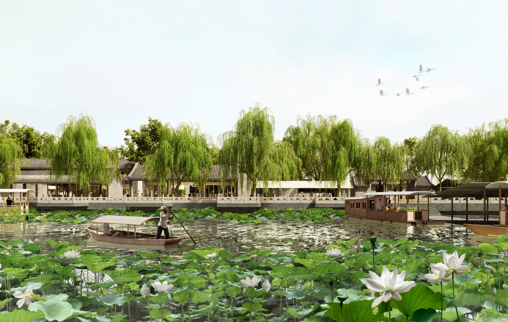

Waterfront+
Shichahai Waterfront & Heritage Renewal
Gold Award · Urban Design · China Human Settlements Academic Year Award, 2025

How can a historic waterfront become part of everyday neighbourhood life?
Shichahai is shaped by the interdependence of water, hutong courtyards, cultural landmarks and everyday commerce. Yet proximity to the lakes does not necessarily translate into public access or meaningful neighbourhood connections.
Waterfront+ proposes a sequence of selective openings, adapted courtyards and shared civic spaces. Rather than replacing the historic fabric with a continuous waterfront development, the project seeks to reconnect water, heritage and daily life through targeted interventions.
A layered waterfront within the historic city.
Shichahai is defined by a long interaction between waterways, temples, hutong neighbourhoods and changing forms of commerce.
Historic landmarks and everyday waterfront life.
Historic urban axis, neighbourhood context and conservation policy.
Selected historical phases of the surrounding urban fabric.
The lake is close. The connections are fragmented.
Discontinuous public spaces, traffic routes and uneven redevelopment interrupt links between the lakes and the neighbourhood behind them.
Dispersed open spaces have limited connections.
Traffic routes and building footprints break pedestrian movement.
Proximity to the lake does not guarantee public accessibility.
Neighbourhood fabric has been adapted unevenly.
The challenge is not simply to create more waterfront space, but to restore relationships between places that already coexist.
Additional site assessment — SWOT analysis +
Selected strengths, weaknesses, opportunities and threats across the district.
From an urban edge to a connected civic landscape.
A sequence of targeted openings, shared public programmes and adaptive building reuse reconnects water, heritage and everyday urban life.
Fragmented spaces and disconnected routes.
Public landscape, heritage and shared activities reconnected.
Create accessible landscapes, docks, and distinctive public waterfront spaces.
Connect community and cultural facilities through a network of shared routes.
Strengthen pedestrian circulation and reduce the impact of spatial barriers.
Work with inherited buildings, programmes and courtyard structures.
One waterfront, multiple scales of civic life.
Rather than a continuous new waterfront object, the plan assembles distinct civic places across the commercial gateway, cultural landmarks and residential courtyards.
The project works on both shores and across the existing urban fabric.
Public routes, community nodes and waterfront connections.
A network of places, not a singular architectural object.
Waterfront+ makes selective connections from the water to the district's inner streets. New and adapted public programmes extend across the site while residential boundaries retain different degrees of enclosure.
01 Connect streets and waterfront landscapes.
02 Adapt existing buildings selectively.
03 Introduce shared community and cultural destinations.
04 Protect the layered character of residential life.
From district strategy to everyday experience.
Three spatial sequences translate the urban framework into specific experiences of commerce, cultural memory and community life.
Urban gateway as public ground.
At Di'anmen, public space is reorganised around pedestrian access, commercial renewal and transportation rather than isolated building footprints.
An activated entry to the historic waterfront.
Comparison of access and development strategies.
Heritage within everyday public life.
Around Huoshen Temple, cultural activities and small public spaces reinforce connections between the retained landmark and the surrounding landscape.
Landscape and public occupation around the landmark.
Water, shade and daily cultural activity along the shoreline.
Adaptive renewal and improved public access.
Courtyards as units of gradual renewal.
At Baimi Xiejie, adapted buildings, shared rooms, a neighbourhood library and small collective spaces strengthen local everyday life.
Shared exterior uses within the inherited grain.
A collective indoor space for reading, meeting and local programmes.
Community destinations are linked to the wider public realm.
Selected circulation, courtyard and landscape adjustments.
Read the waterfront in plan and section.
Plans and long sections reveal how building adaptation, ground levels and shared spaces work together across the two intervention areas.
Northern waterfront
Public programmes, transit and street-level movement are examined in relation to the lake.
Building programme, shoreline and public circulation.
The relationship between lakefront, buildings, street and below-grade connections.
Southern neighbourhood
Courtyard networks and everyday public spaces operate within the finer-grained residential fabric.
Shared facilities and courtyard relationships.
Transitions between public waterfront and neighbourhood spaces.
Waterfront+ is an urban-design proposal. Ownership, resident agreements, conservation review and the management of shared facilities require further study before implementation. The related research separately explores the social and spatial consequences of waterfront renewal.
Whose Waterfront?
Public access, residential thresholds and the uneven benefits of renewal.
Read the research ↗Original research and design framework +
Background analysis, renewal vision, key interventions and strategies arranged in the project's working matrix.
Project credits
Collaborative design · Hao Chang & Mengzhe Lee
Shichahai, Beijing · 2024
Gold Award · Urban Design · China Human Settlements Academic Year Award, 2025